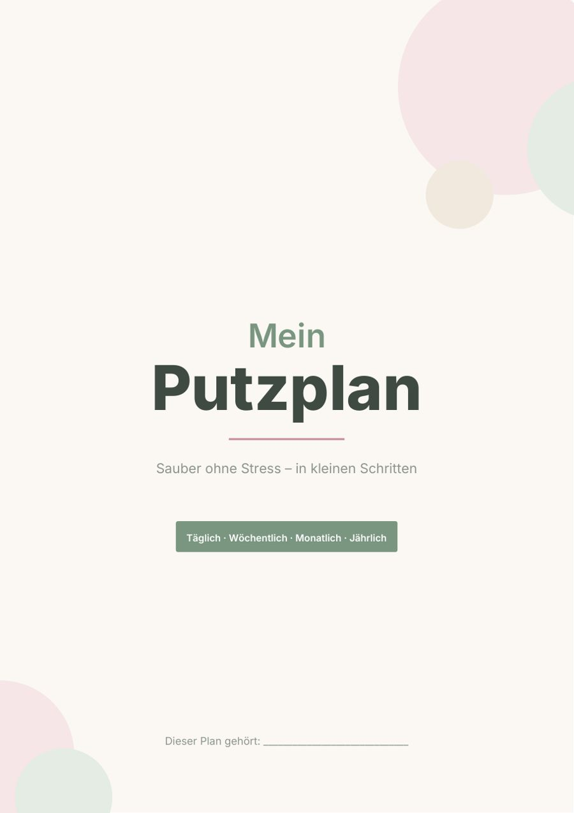
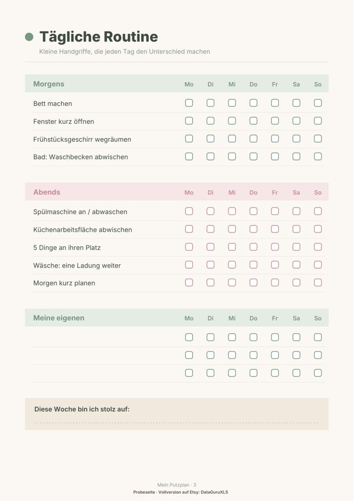

Putzplan zum Ausdrucken kostenlos
Ein Putzplan hilft nur, wenn du ihn wirklich benutzt. Hier bekommst du eine kostenlose Probeseite zum Ausdrucken und eine Anleitung, mit der aus „irgendwann mal putzen“ eine feste Routine wird.


Kostenlose Probeseite herunterladen
Tägliche Routine mit Abhak-Feldern für die ganze Woche (1 Seite, A4).
PDF herunterladen (kostenlos)So bleibt dein Putzplan alltagstauglich
Die meisten Putzpläne scheitern nicht an der Faulheit, sondern daran, dass sie zu viel auf einmal verlangen. Wer sich für Samstag das ganze Bad, die Küche und alle Böden vornimmt, schiebt den Termin irgendwann auf. Besser ist ein Plan aus kleinen Schritten, die jeweils höchstens 15 Minuten dauern.
In vier Schritten zum eigenen Plan
- Schreibe auf, was in jedem Raum wirklich regelmäßig anfällt, und streiche alles, was nur alle paar Monate nötig ist.
- Teile die Aufgaben in täglich (zum Beispiel Geschirr, Arbeitsfläche, Bett), wöchentlich (Böden, Bad, Bettwäsche) und saisonal (Fenster, Backofen, Kleiderschrank).
- Ordne jedem Wochentag nur eine Zone zu: Montag Bad, Dienstag Küche, Mittwoch Wohnzimmer und so weiter.
- Hänge den Plan dorthin, wo du ihn täglich siehst, und hake jede erledigte Aufgabe ab.
Tipps für Tage mit wenig Energie
- Lege eine Mindestroutine fest: Geschirr, Müll, eine Fläche. Mehr muss an schlechten Tagen nicht sein.
- Stelle einen Timer auf 10 bis 20 Minuten. Wenn er klingelt, darfst du aufhören.
- Verbinde das Putzen mit Musik oder einem Hörbuch, damit es sich weniger nach Pflicht anfühlt.
- Verteile die Aufgaben im Haushalt fair und sichtbar, dann gibt es weniger Diskussionen.
- Feiere Fortschritt statt Perfektion: Ein halb geputztes Bad ist besser als ein geplantes, aber nie geputztes.
Drucke die Probeseite aus und teste eine Woche lang, ob die Aufteilung zu deinem Alltag passt. Passe dann die Aufgaben mit einem Stift an, bis alles stimmig ist.
Häufige Fragen
Wie oft sollte ich putzen?
Täglich genügen fünf bis zehn Minuten für Geschirr, Flächen und Ordnung. Bad, Böden und Bettwäsche reichen meist einmal pro Woche, Fenster und Backofen alle paar Monate.
Wie drucke ich den Plan richtig aus?
Wähle im Druckdialog A4, Skalierung 100 % und „Tatsächliche Größe“. Normales 80-g-Papier reicht. Willst du jede Woche neu abhaken, stecke die Seite in eine Klarsichthülle und nutze einen abwischbaren Stift.
Darf ich die Probeseite weitergeben?
Die Datei ist für deinen privaten Gebrauch gedacht. Du kannst sie beliebig oft ausdrucken, aber bitte nicht weiterverkaufen oder an anderer Stelle zum Download anbieten.
Vollversion auf Etsy
Die Vollversion hat 15 Seiten: Wochenplan, Monatsplan, Jahresputz, fünf Raum-Checklisten, 20-Minuten-Reset, 30-Tage-Tracker und einen leeren Wochenplan zum Selbstausfüllen.
Putzplan (15 Seiten) auf Etsy ansehen